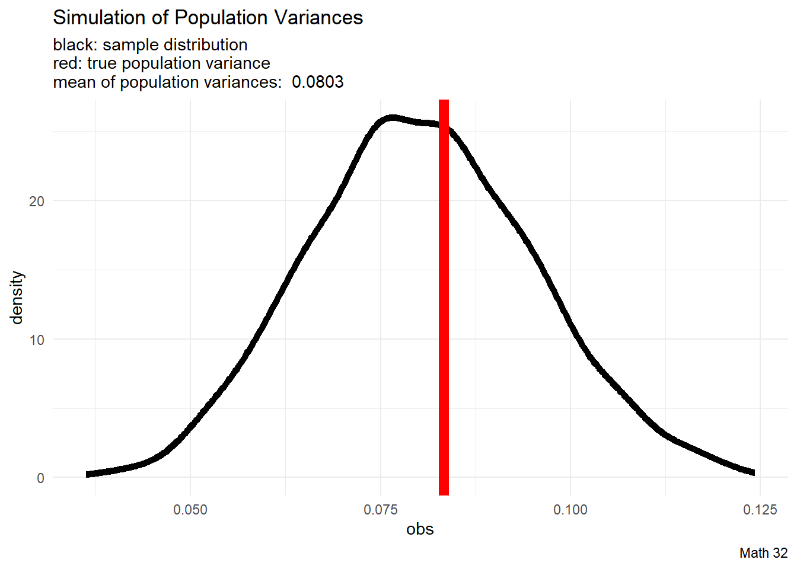

Today: Estimators
Goal: Explore generalization from samples to populations
Objectives: Show the biased or unbiased estimation via
- sample mean \(\bar{x}\)
- sample variance \(s^{2}\)
- sample standard deviation \(s\)
Demographics Example
From our Demographics Survey data of Math 32 students, suppose that the following is a sample of observations of heights (in inches):
\[\{x_{11} = 72, x_{12} = 61, x_{13} = 60, x_{14} = 75, x_{15} = 69\}\]
- then \(t_{1} = 67.4\) inches is the sample mean.
Suppose that the following is another sample of heights:
\[\{x_{21} = 66, x_{22} = 78, x_{23} = 78, x_{24} = 77, x_{25} = 64\}\]
- then \(t_{2} = 72.6\) inches is the sample mean.
Suppose that the following is another sample of heights:
\[\{x_{31} = 61, x_{32} = 59, x_{33} = 70, x_{34} = 61, x_{35} = 65\}\]
- then \(t_{3} = 63.2\) inches is the sample mean.
Observe: the sample mean (usually) changes upon a new set of observations
- Can we calculate the average height of UC Merced students?
- How can we calculate the average height of UC Merced students?
Thought: what if we take a mean of the sample means?
Estimators
Let \(T\) be a random variable and \(f\) be some calculation \[T = f(x_{1}, x_{2}, x_{3}, ...)\]
If we are trying to estimate a population parameter \(\theta\), we say that \(T\) is an unbiased estimator of \(\theta\) if \[\text{E}[T] = \theta\]
Today, we will look at situations where \(f\) is calculating the
- mean
- variance
- standard deviation
Mean
We will run simulations with \(X \sim U(0,1)\) because we know what the answers should be. The population mean is
\[\mu = \displaystyle\frac{a + b}{2} = \displaystyle\frac{1}{2}\]
N <- 1337 # number of iterations
n <- 25 # sample size
# pre-allocate vector of space for observations
obs <- rep(NA, N)
# run simulation
for(i in 1:N){
these_numbers <- runif(n, 0, 1) # sample n numbers from U(0,1)
obs[i] <- mean(these_numbers) #record average
}
# mean of observations
mean_of_obs <- mean(obs)
# make data frame
df <- data.frame(obs)
# visualization
df |>
ggplot(aes(x = obs)) +
geom_density(color = "black", size = 2) +
geom_vline(xintercept = 1/2, color = "red", size = 3) +
labs(title = "Simulation Sample Mean",
subtitle = paste("black: sample distribution\nred: true population mean\nmean of sample means: ", round(mean_of_obs, 4)),
caption = "Math 32") +
theme_minimal()Warning: Using `size` aesthetic for lines was deprecated in ggplot2 3.4.0.
ℹ Please use `linewidth` instead.
Loosely speaking, since the sampling distribution “lines up” with the population mean, we say that the sample median is an unbiased estimator of the population mean.
Therefore \(\text{E}[\bar{X}_{n}] = \mu\)
Population Variance
We will run simulations with \(X \sim U(0,1)\) because we know what the answers should be. The population variance is
\[\sigma^{2} = \displaystyle\frac{(b-a)^{2}}{12} = \displaystyle\frac{1}{12}\]
We will explore what happens if we apply the population variance formula
\[\sigma^{2} = \frac{1}{N}\displaystyle\sum_{i=1}^{N} (x_{i} - \mu)^{2}\]
to samples.
# user-defined function
pop_var <- function(x){
N <- length(!is.na(x)) #population size
mu <- mean(x, na.rm = TRUE) #population mean
# return population mean (note use of "N")
sum( (x - mu)^2 ) / N
}
N <- 1337 # number of iterations
n <- 25 # sample size
# pre-allocate vector of space for observations
obs <- rep(NA, N)
# run simulation
for(i in 1:N){
these_numbers <- runif(n, 0, 1) # sample n numbers from U(0,1)
obs[i] <- pop_var(these_numbers) #record population variance
}
# mean of observations
mean_of_obs <- mean(obs)
# make data frame
df <- data.frame(obs)
# visualization
df |>
ggplot(aes(x = obs)) +
geom_density(color = "black", size = 2) +
geom_vline(xintercept = 1/12, color = "red", size = 3) +
labs(title = "Simulation of Population Variances",
subtitle = paste("black: sample distribution\nred: true population variance\nmean of population variances: ", round(mean_of_obs, 4)),
caption = "Math 32") +
theme_minimal()
Loosely speaking, since the sampling distribution tends to underestimate the population variance, we say that the population variance (with \(N\)) is a biased estimator of the population variance.
Bessel’s Correction
Can we rescale the process for computing variance so that the operation is an unbiased estimator for the population variance?
Let \(X_{i}\) be a set of \(n\) i.i.d. random variables from the same distribution with the same population variance \(\sigma^{2}\). By independence, there is zero covariance.
We will compute the value of \(k\) so that
\[\text{E}\left[k \cdot \frac{\sum_{i=1}^{n}(X_{i} - \bar{X}_{n})^{2}}{n}\right] = \sigma^{2}\]
Lemma: \(\text{Var}(X_{i} - \bar{X}_{n}) = \displaystyle\frac{n-1}{n} \cdot \sigma^{2}\)
We have derived the formula for the sample variance
\[S_{n}^{2} = \displaystyle\frac{1}{n-1}\displaystyle\sum_{i=1}^{n}(X_{i} - \bar{X}_{n})^{2}\]
That is, the “\(n-1\)” (Bessel’s correction) is in place so that the sample variance \(s^{2}\) is an unbiased estimator of the population variance \(\sigma^{2}\)
Sample Variance
We will run simulations with \(X \sim U(0,1)\) because we know what the answers should be. The population variance is
\[\sigma^{2} = \displaystyle\frac{(b-a)^{2}}{12} = \displaystyle\frac{1}{12}\]
We will explore what happens if we apply the sample variance formula
\[s^{2} = \frac{1}{n-1}\displaystyle\sum_{i=1}^{n} (x_{i} - \mu)^{2}\]
to samples.
# user-defined function
samp_var <- function(x){
n <- length(!is.na(x)) #sample size
xbar <- mean(x, na.rm = TRUE) #sample mean
# return population mean (note use of "n-1")
sum( (x - xbar)^2 ) / (n-1)
}
N <- 1337 # number of iterations
n <- 25 # sample size
# pre-allocate vector of space for observations
obs <- rep(NA, N)
# run simulation
for(i in 1:N){
these_numbers <- runif(n, 0, 1) # sample n numbers from U(0,1)
obs[i] <- samp_var(these_numbers) #record sample variance
}
# mean of observations
mean_of_obs <- mean(obs)
# make data frame
df <- data.frame(obs)
# visualization
df |>
ggplot(aes(x = obs)) +
geom_density(color = "black", size = 2) +
geom_vline(xintercept = 1/12, color = "red", size = 3) +
labs(title = "Simulation of Sample Variances",
subtitle = paste("black: sample distribution\nred: true population variance\nmean of sample variances: ", round(mean_of_obs, 4)),
caption = "Math 32") +
theme_minimal()Loosely speaking, since the sampling distribution “lines up” with the population variance, we say that the sample variance (with \(n-1\)) is an unbiased estimator of the population variance.
Sample Standard Deviation
We will run simulations with \(X \sim U(0,1)\) because we know what the answers should be. The population standard deviation is
\[\sigma = \sqrt{\displaystyle\frac{(b-a)^{2}}{12}} = \sqrt{\displaystyle\frac{1}{12}}\]
We will explore what happens if we apply the sample variance formula
\[s = \sqrt{\frac{1}{n-1}\displaystyle\sum_{i=1}^{n} (x_{i} - \mu)^{2}}\]
to samples.
# user-defined function
samp_var <- function(x){
n <- length(!is.na(x)) #sample size
xbar <- mean(x, na.rm = TRUE) #sample mean
# return population mean (note use of "n-1")
sum( (x - xbar)^2 ) / (n-1)
}
N <- 1337 # number of iterations
n <- 25 # sample size
# pre-allocate vector of space for observations
obs <- rep(NA, N)
# run simulation
for(i in 1:N){
these_numbers <- runif(n, 0, 1) # sample n numbers from U(0,1)
obs[i] <- sqrt(samp_var(these_numbers)) #record sample standard deviation
}
# mean of observations
mean_of_obs <- mean(obs)
# make data frame
df <- data.frame(obs)
# visualization
df |>
ggplot(aes(x = obs)) +
geom_density(color = "black", size = 2) +
geom_vline(xintercept = sqrt(1/12), color = "red", size = 3) +
labs(title = "Simulation of Sample Variances",
subtitle = paste("black: sample distribution\nred: true population variance\nmean of sample standard deviations: ", round(mean_of_obs, 4)),
caption = "Math 32") +
theme_minimal()Let \(X_{i}\) be a set of \(n\) i.i.d. random variables from the same distribution with the same population standard deviation \(\sigma\). To avoid trivial situations, assume non-zero variance, so \(\sigma \neq 0\).
If \(s = \sqrt{ \displaystyle\frac{\sum_{i=1}^{n}(X_{i} - \bar{X}_{n})^{2}}{n-1} }\) was an unbiased estimator, then \(\text{E}[s] = \sigma\)
However, by Jensen’s Inequality, since \(g(x) = x^{2}\) is a convex function,
\[\sigma^{2} = \text{E}[S_{n}^{2}] > \left(\text{E}[S_{n}]\right)^{2}\]
and it follows that \(\text{E}[S_{n}] < \sigma\). Due to the underestimation, sample standard deviation \(s\) is a biased estimator of population standard deviation \(\sigma\).
\[~\]
However, in practice, the discrepancy is usually so small that it is ignored.
Looking Ahead
due Fri., Mar. 24:
- LHW8
no lecture on Mar. 24, Apr. 3
Exam 2 will be on Mon., Apr. 10